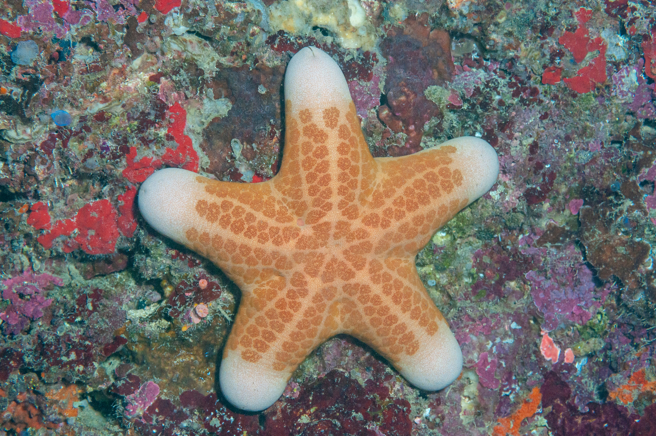
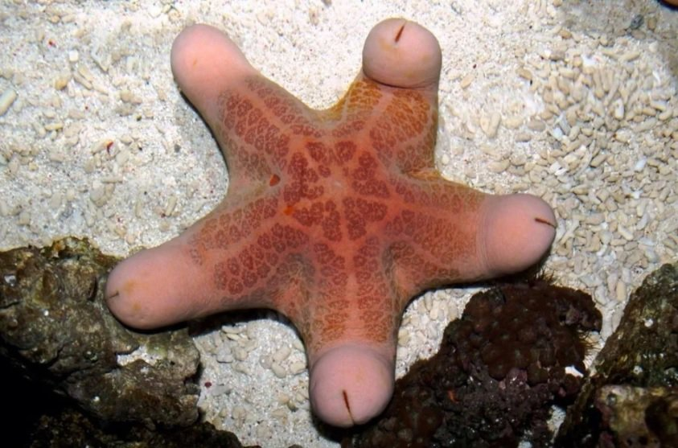
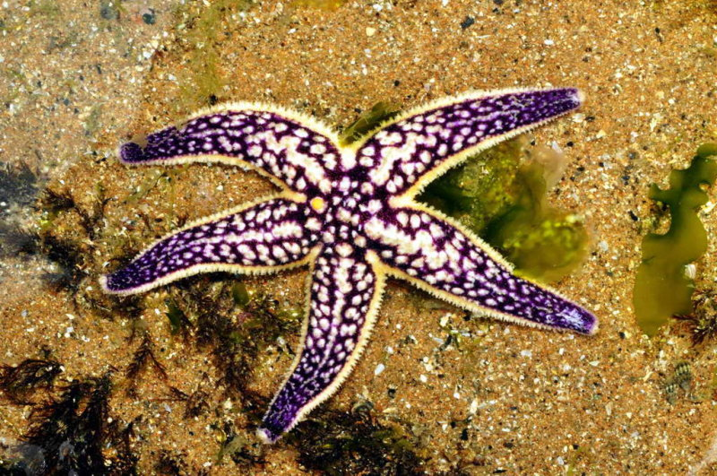
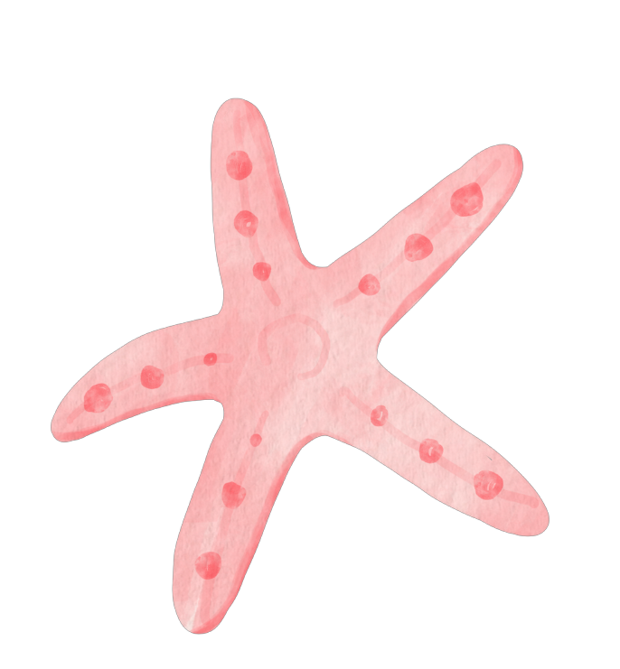

海星 Star Fish

海星

海星

海星
Previous
Next
性格：
螃蟹的性格可以描述為謹慎而有戒心的。它們
通常是孤獨的生物，喜歡獨自行動和尋找食物
。螃蟹對於自身的保護非常重視，當感覺到威
脅時會迅速退縮或用它們強大的鉗子進行自衛
。螃蟹也是頑強而堅毅的動物，它們在繁殖和
保護自己的領域時表現出強烈的意志力。它們
會展示出極大的耐心和毅力來捕捉獵物或守衛
自己的巢穴。儘管螃蟹有時會表現出攻擊性，
但它們通常更傾向於選擇逃跑而非主動攻擊。
此外，螃蟹還展現出一定的社交行為，特別是
在繁殖季節。在這個時期，它們會進行與同類
的交流和競爭，以確定配偶和領地的歸屬權。
螃蟹的性格特點使它們成為海洋和淡水生態系
統中獨特而引人注目的生物之一。
食物：
螃蟹是雜食性動物，其食物來源多樣而廣泛。
它們以植物、藻類、海藻和海底碎屑為主食，
同時也會捕食小型無脊椎動物、小魚和腐屍。
螃蟹以它們強大的鉗子捕捉獵物，並使用其鋸
齒狀的嘴巴將食物碾碎。對於不同種類的螃蟹
來說，它們的食物偏好可能有所不同。沙蟹偏
愛食用海灘上的腐植質和浮游生物，而螃蟹的
某些種類則更傾向於食用軟體動物和小型魚類
。此外，一些螃蟹會利用它們的鉗子打開貝殼
，以取得貝類動物的肉。螃蟹的食物習性與它
們的生活環境密切相關。它們通常在河口、海
灘、珊瑚礁和岩石區域中尋找食物，並利用它
們的感知能力和敏捷的動作來捕捉獵物。食物
的供應情況和季節變化也會影響螃蟹的飲食習
慣。總的來說，螃蟹是多樣化的食性動物，它
們能夠根據環境變化和資源的可用性適應不同
的食物來源。這種適應性使螃蟹在各種海洋和
淡水生態系統中獲得了廣泛的分布和成功的生
存。

外表特徵＆外觀：
螃蟹是一種甲殼類動物，其外表特徵獨特而引
人注目。它們擁有堅硬的外殼，呈現出不同顏
色和紋理，如紅色、藍色、綠色等，並且常常
帶有斑點或條紋。螃蟹的身體由頭部、胸部和
腹部組成，並具有兩對大鉗狀的前肢，被用於
捕捉獵物和防禦。螃蟹的外觀也包括一對複眼
和一對長觸鬚，這些觸鬚可用於感知環境和尋
找食物。它們的後腿則演變成了游泳腿，使其
能夠在水中迅速移動。螃蟹的體型大小各異，
從小型的幾毫米到巨大的螃蟹種類，如日本帝
王蟹。螃蟹的外表特徵和外觀使其成為海洋和
淡水生態系統中的重要成員。它們不僅提供了
食物來源，也為其他海洋生物提供了棲息地。
螃蟹的獨特外觀和多樣化的物種使其成為人們
熱愛的觀賞和食用對象，同時也需要保護和管
理來維護其數量和生態價值。
分佈＆數量：
螃蟹廣泛分佈於世界各地的淡水和海洋環境中
。它們可以在沿海地區、河流、湖泊和沼澤等
不同水域中找到。螃蟹的分佈受到環境條件、
水溫和水質等因素的影響。螃蟹的數量因物種
和地區而異。一些常見的螃蟹物種，如紅蟳和
青蟹，數量相對較多，並且在適合的棲息地中
繁殖迅速。這些物種常見於溫暖的海洋和沿海
地區。然而，螃蟹的數量也受到環境壓力和人
類活動的影響。過度捕撈、棲息地破壞和水質
污染都可能對螃蟹的數量產生負面影響。有些
物種甚至面臨著瀕危或受威脅的情況。
生活型態＆習性：
螃蟹具有獨特的生活型態和習性，適應了它們
所處的水生環境。螃蟹是底棲性生物，喜歡棲
息在海洋、淡水和潮間帶等水域的岩石、珊瑚
礁或沙泥底質中。牠們的堅硬外殼提供了保護
，並具有類似鰓的結構來呼吸。螃蟹是雜食性
動物，食物範圍廣泛，包括藻類、小型無脊椎
動物、魚類和腐肉等。牠們以大部分的食物為
主食，有些物種會利用長腳捕食昆蟲或其他小
型生物。螃蟹是冷血動物，受到環境溫度的影
響。它們的活動水平在不同時間和環境條件下
會有所變化。一些物種在夜間更活躍，而其他
物種則在潮間帶的退潮時活動。螃蟹通常是獨
居性的，並且具有領域意識。它們會用鉗子進
行防禦和競爭，並以視覺和觸覺來感知周圍的
環境。螃蟹的繁殖方式各異，有些物種是卵胎
生，而其他物種則是卵生。雌性螃蟹會產卵，
並將卵固附在腹部，直到幼蟹孵化出來。
壽命：
大多數螃蟹的壽命在1到8年之間。